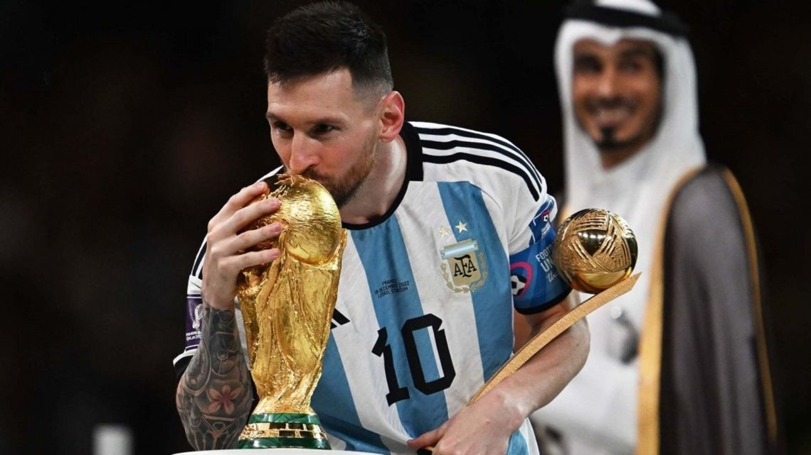
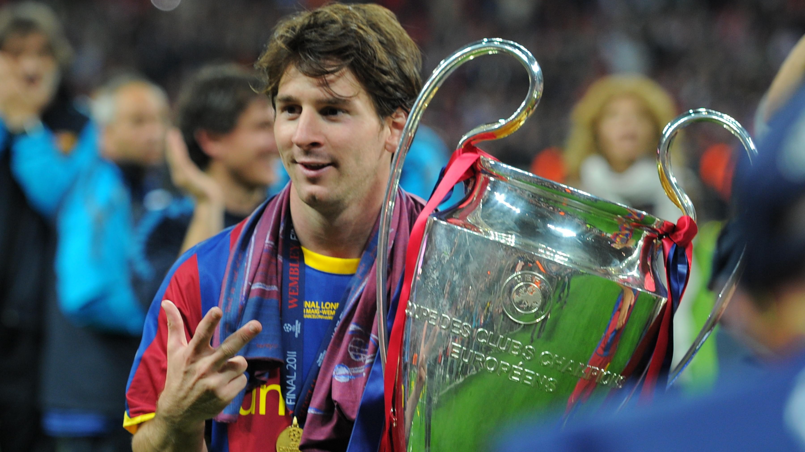
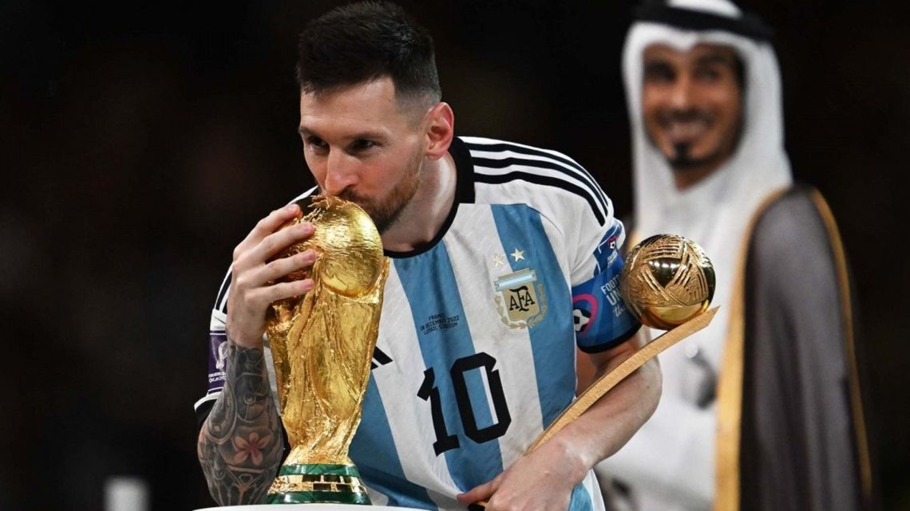
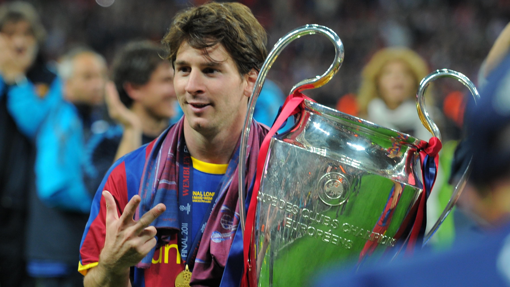

Fotos de Messi
"Messi con el trofeo del Mundial"
"Messi con sus Balones de Oro"

"Messi con el trofeo de la Champions"
Lionel Andrés Messi Cuccittini (Rosario, 24 de junio de 1987), conocido como Leo Messi, es un futbolista argentino que juega como delantero o centrocampista. Desde 2023, integra el plantel del Inter Miami de la MLS estadounidense. Es también internacional con la selección de Argentina, de la que es capitán.
Con el Fútbol Club Barcelona, al que estuvo ligado más de veinte años, ganó 35 títulos, entre ellos, diez de La Liga, cuatro de la Liga de Campeones de la UEFA y siete de la Copa del Rey. Considerado con frecuencia el mejor jugador del mundo y uno de los mejores de todos los tiempos, es el único futbolista en la historia que ha ganado, entre otras distinciones, ocho veces el Balón de Oro, siete premios de la FIFA al mejor jugador del mundo, seis Botas de Oro y dos Balones de Oro de la Copa Mundial de Fútbol. En 2020, se convirtió en el primer futbolista y el primer argentino en recibir un premio Laureus y fue incluido en el Dream Team del Balón de Oro. Tiene, entre otros, los récords por más goles en una temporada, en un mismo club y en un año calendario. Es, además, el máximo goleador histórico del Barcelona y de la selección argentina, de La Liga, la Supercopa de España, la Supercopa de Europa y el jugador no europeo con más goles en la Liga de Campeones de la UEFA.
"Messi con el trofeo del Mundial"
"Messi con sus Balones de Oro"
"Messi con el trofeo de la Champions"
